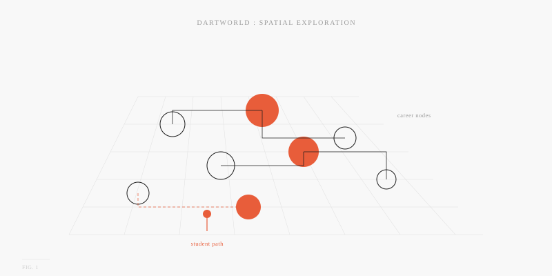
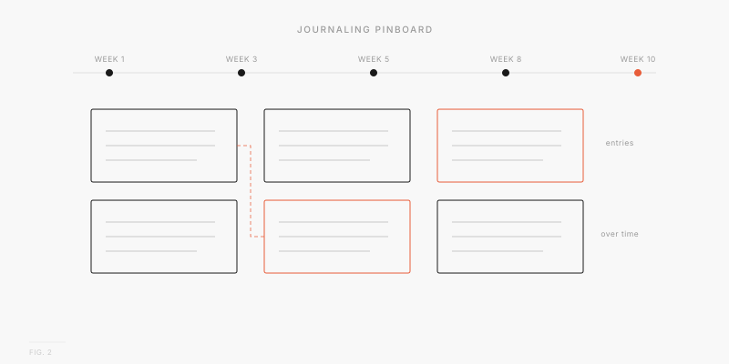
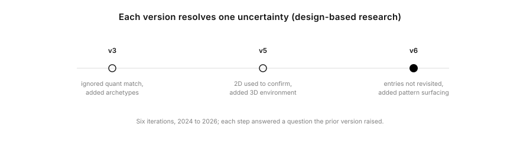
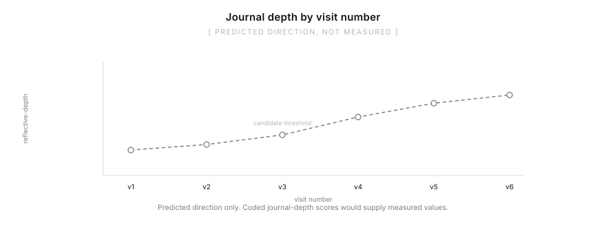

Spatial Narrative Platforms for Sustained Career Reflection at Cohort Scale
Lo/Be Lab
About this working paper Author-produced. Develops
the design rationale for DartWorld, a research prototype at Lo/Be Lab.
Comments, citation requests, and counter-evidence welcome at
seth.looper@gmail.com.
Lo/Be Lab · CC
BY-NC 4.0
ORCID: 0009-0002-8683-1632
(https://orcid.org/0009-0002-8683-1632)
Spatial Narrative Platforms for Sustained Career Reflection at Cohort Scale
Lo/Be Lab · seth.looper@gmail.com · ORCID 0009-0002-8683-1632
Abstract
Career counseling at most universities operates on a high-touch, low-frequency model: one student, one advisor, one thirty-minute session. As a delivery model it is humane. As a developmental support, it is structurally mismatched to the work it is asked to do, because career formation in undergraduates is a longitudinal identity process (Baxter Magolda, 2001; Marcia, 1966) rather than a one-time decision amenable to advice. This paper describes DartWorld, a spatial narrative platform the author designed and led at Dartmouth College, built with student developer teams from the DALI Lab, to test whether a sustained, environment-shaped reflection practice can scale to a full undergraduate cohort. The platform integrates three components: a reflective onboarding instrument that sorts students into one of three identity archetypes (Explorer, Seeker, Achiever); a navigable three-dimensional environment for treating career exploration as a place to walk through rather than a list to scroll; and a journaling pinboard that persists across sessions and supports longitudinal review. Development followed a design-based research methodology (Brown, 1992; Design-Based Research Collective, 2003) with rolling ten-week iterations alongside successive student development teams. Development paused when the author’s Dartmouth role ended in September 2026. I argue, drawing on Schön’s reflective-practitioner tradition (Schön, 1983), Kolb’s experiential learning cycle (Kolb, 1984), and Dede’s immersive-environments research (Dede, 2009), that DartWorld is best understood as a sustained reflective environment rather than a digital career service. The paper closes with the research agenda the design move opens and positions DartWorld as the prototype testing Research Questions 1 and 2 within the lab’s broader research program.
Keywords career development · identity formation · longitudinal reflection · immersive learning environments · design-based research · 3D educational platforms · narrative identity · self-authorship · expressive writing · archetype clustering
Most university career offices run on a model that is humane in any single instance and structurally inadequate at scale. A student walks into the office, talks for twenty to thirty minutes, leaves with a to-do list, and may not return for months. The advisor is competent, and the conversation is often useful in the moment. None of that alters the basic problem: career formation in undergraduates does not happen in thirty-minute sessions. It happens across years, in conversations the student has with themselves between the advising appointments, with frames they construct gradually as their experience accumulates.
The mismatch between the model and the work is not new, and the response from career-services research has generally been to enrich the model rather than to question it. Add more sessions. Train advisors more carefully. Build assessment instruments students can take asynchronously. These are reasonable moves within the existing frame. None of them address the deeper issue, which is that the unit of analysis for career development is the term or the year, not the session.
This paper describes a prototype that proposes a different unit of analysis. DartWorld is a sustained reflective environment, accessible to students at any time, in which the career-related thinking is the activity, not a service to be received. The platform has three components, each described in detail in Section 4: a reflective onboarding instrument that places the student in one of three identity-related archetypes; a navigable three-dimensional environment that treats career exploration as a landscape to traverse rather than a list to consult; and a journaling pinboard that retains and surfaces the student’s writing across multiple sessions, making longitudinal patterns visible to the student themselves. The platform was built with student developer teams from Dartmouth’s DALI (Digital Applied Learning and Innovation) Lab across six iterations; development paused when the author’s Dartmouth role ended in September 2026.
The argument I develop is that the spatial-and-longitudinal design pattern is responsive to a specific failure mode of the conventional career-advising model: that the model cannot, by construction, support work that happens between sessions. Section 2 places this argument in three theoretical traditions: developmental psychology’s account of identity formation as a multi-year process (Marcia, 1966; Baxter Magolda, 2001; McAdams, 1993); the learning-sciences account of reflection as an environment-shaped practice (Schön, 1983; Kolb, 1984; Pennebaker, 1997); and the educational-technology account of three-dimensional immersive environments as cognitive amplifiers (Dede, 2009; Bricken, 1991). Section 3 describes the design-based research methodology that frames the DartWorld development cycle. Section 4 describes the platform in detail. Section 5 discusses what the design pattern implies, what limits the current implementation, and what research lines the design opens.
This paper makes three contributions. First, it names a design pattern, the sustained reflective environment, and argues it is the appropriate unit for career-development support, against a session-based delivery model whose timescale is mismatched to the years-long work of identity formation. Second, it documents how that pattern is operationalized across three integrated components (reflective onboarding, navigable 3D environment, longitudinal journaling pinboard) and six development iterations, with each version tied to a specific uncertainty it resolved. Third, it specifies the empirical agenda the pattern opens (Section 5.3), and states the evidence that would support or count against its central design claims. The evidence is my own observation and that of the DALI student developers across build cycles, not measured study outcomes; Section 5.2 sets out what therefore remains undemonstrated.
The developmental-psychology literature on identity formation does not treat career decisions as choices made at moments. It treats them as expressions of a longer process that proceeds across years, with characteristic phases. James Marcia’s (1966) identity-status framework named four positions that have organized adolescent identity research ever since: identity diffusion (no exploration, no commitment), foreclosure (commitment without exploration, typically inherited from family or context), moratorium (active exploration without commitment), and achievement (commitment following exploration). The instrument that operationalized this framework, and the considerable empirical literature that has used it since, presume that movement among these statuses is the developmental work, and that the work happens over years.
Marcia Baxter Magolda (2001) extended this lineage in a longitudinal study that followed the same students from their college years into their thirties. Her framework of self-authorship, the developmental endpoint in which an individual becomes capable of authoring their own life rather than receiving it from external authorities, depends on three interlocking capacities: trusting an internal voice, building an internal foundation, and securing internal commitments. None of these capacities forms in a single session. They form across years, in interaction with circumstances that demand more of the person than received frames can supply.
The Marcia-and-Baxter-Magolda tradition has a complementary intellectual antecedent in Erik Erikson’s (1968) psychosocial framework, which posited identity formation as the central developmental task of late adolescence and early adulthood. Marcia’s status framework operationalized Erikson’s identity-vs-role-confusion stage; Baxter Magolda’s self-authorship extended the Eriksonian frame into longer adulthood. The whole lineage matters for DartWorld because it predicts that career-related identity work in undergraduates is a years-long process with characteristic phases, not a discrete decision amenable to advice.
Krumboltz’s planned happenstance learning theory (Mitchell, Levin, & Krumboltz, 1999) treats unplanned events as a regular part of career formation and asks how learners can make use of them. It bears on DartWorld’s pinboard design: the pinboard’s persistent record is, in part, a way for the student to surface the unplanned events they have noticed and the dispositions they are developing across those events.
Dan McAdams’s (1993) narrative identity theory contributes a third complementary framing. Identity, in McAdams’s account, is a story a person keeps revising about who they are, where they came from, and where they are going. The implication for career development is direct: a tool that supports career thinking is, in part, a tool that supports the editing of a story. The conventional career assessment, presenting a ranked match at a moment, is poorly designed for this task. A platform that retains the student’s own writing across multiple sessions, allows the student to revisit and revise it, and surfaces patterns across time is better designed for it.
Together these three traditions converge on a single requirement: a developmental tool for career formation must operate on a timescale longer than a session. DartWorld is built as an environment to be revisited rather than a single experience to be completed.
The learning-sciences literature on reflection has, since Donald Schön’s (1983) The Reflective Practitioner, treated reflection as a practice rather than an event. Schön drew his cases from the design studio, where students learn through repeated cycles of attempt, critique, and revision, and from professions where competent practice requires what he called “reflection-in-action”: the capacity to monitor and adjust one’s own work as one is doing it. The methodological point is that reflection of this kind comes from environments designed to occasion it rather than from exhortation.
David Kolb’s (1984) experiential learning cycle formalized a related observation: that learning from experience requires a specific four-stage cycle of concrete experience, reflective observation, abstract conceptualization, and active experimentation. Each stage requires conditions the others do not. Reflective observation requires time and prompts; abstract conceptualization requires concepts to think with; active experimentation requires opportunities to test what one has reflected on and conceptualized. A tool that supports any single stage of this cycle is incomplete. A tool that supports the cycle is the developmental unit.
A more recent contribution comes from the literature on expressive writing. James Pennebaker (1997) and his collaborators have demonstrated across a range of contexts that structured writing about emotionally significant experiences produces measurable cognitive and affective benefits over time. The benefit appears to lie in writing as a cognitive operation rather than in the written artifact. The act of putting an experience into language and revisiting it across multiple sessions appears to do work that thinking-without-writing does not. The DartWorld journaling pinboard is designed around this finding: the writing itself is the developmental activity, and the persistence of the writing across sessions is what makes the activity longitudinal.
The educational-technology literature on three-dimensional and immersive environments has matured considerably since Bricken’s (1991) early arguments for virtual reality as a learning medium. Chris Dede’s (2009) synthesis distinguishes several distinct affordances of immersive environments: multiple perspectives, situated learning, and transfer to non-immersive contexts. Dede’s empirical work with multi-user virtual environments such as River City (Dede et al., 2004) demonstrated that students using three-dimensional environments to investigate scientific problems engaged with the content differently than students in a comparable non-immersive curriculum, with measurable differences in learning outcomes. I invoke Dede here with the explicit caveat that DartWorld is not doing the content learning Dede’s empirical work measured. Dede’s three-dimensional environments were investigative settings for scientific inquiry; DartWorld uses three-dimensional space as a navigation metaphor for self-reflection content. The Dede literature licenses the broader claim that environmental affordances matter for learning; it does not license the specific claim that DartWorld’s three-dimensional layer produces the developmental effects DartWorld is designed to support. That claim is an empirical one and remains untested.
The relevant claim for DartWorld is more modest than the broader claims of the immersive-learning literature. DartWorld does not propose that students learn careers by walking through a 3D model of them, in any literal sense. It proposes that treating career exploration as a navigable space rather than a readable list changes the cognitive task. The shift is the same one the author describes across several projects (see also the author’s field note Maps over lists): a ranked output invites a choice, a spatial output invites movement through the material, and the second suits the exploratory work career assessment is meant to enable. The three-dimensional environment is the most immersive instantiation of this design move available in browser-deployable technology.
Jack Mezirow’s (1997) transformative-learning theory provides a related theoretical anchor, although one I use with some caution. Mezirow’s disorienting dilemma, in the canonical formulation, is a life-event-magnitude rupture of meaning perspective (job loss, divorce, illness, encounter with profound otherness) that ruptures the learner’s prior frames of reference. A nine-question onboarding instrument cannot produce a dilemma of that magnitude. I use the term frame disturbance for the smaller-scale phenomenon DartWorld is designed to produce: the productive surprise that occurs when a student’s self-image and an environment’s response disagree in ways the student is then required to think about.
DartWorld’s reflective-onboarding instrument is engineered around this principle. The three archetypes (Explorer, Seeker, Achiever) are deliberately simplified positions; the instrument is calibrated such that many students will land on an archetype that disagrees with their own prior self-image. The disagreement is the design target. A student who reads “Achiever” but does not feel like one has been handed a productive surprise that the rest of the platform supports them in working on. A student who reads “Explorer” and feels confirmed is, on the lab’s design bet, less likely to do the developmental work the environment exists to support. The Mezirow tradition provides the orientation; the mechanism DartWorld engineers is the smaller frame-disturbance, not the canonical Mezirovian dilemma.
DartWorld is positioned within the design-based research tradition (Brown, 1992; Design-Based Research Collective, 2003; Anderson & Shattuck, 2012), with one project-specific extension: the development team itself rotates. The DALI Lab at Dartmouth pairs undergraduate engineers and designers with project leads on ten-week build cycles aligned to academic terms. Each term, a new team picked up the project from the previous term’s commits and added a specific feature or restructured a specific component. The project lead, who was consistent across terms, held the design rationale; the build team turned rationale into shipped code. The development cadence was therefore continuous, but the team was term-bounded.
This structure has a methodological consequence: the design-research literature on continuity of researcher across iterations (Anderson & Shattuck, 2012) does not entirely fit. The continuity at DartWorld is at the lead-and-rationale layer, not the build layer. The design-based research methodology is, in my adaptation, focused on the documentation of design rationale across rolling implementations rather than on continuous build-team participation. The DALI Lab structure also implies that the platform must be legible to a team that did not build the previous iteration; this is itself a discipline that affects the design.
The current paper develops the design rationale at sufficient depth that it can be challenged on theoretical grounds. The empirical work the rationale invites, described in Section 5.3, will require partnership with developmental-psychology and learning-sciences research programs equipped to conduct the relevant longitudinal studies.
Scope and method. This paper is a design-research account of platform iterations across rolling DALI Lab build cycles. The platform has not been the subject of formally collected human-subjects research data; the iteration observations described below reflect the author’s observation and review with the DALI student developers across build cycles, not measured study outcomes. No IRB-reviewed protocol was in place; observations are the author’s own program notes, not research data. Any analysis of student-produced pinboard content would be future work requiring IRB approval and student consent.


A student new to DartWorld encounters a nine-question reflective onboarding instrument before entering the main environment. The questions begin simply (where are you from, what do you study) and become progressively more reflective (what keeps coming up in your choices, what are you actually worried about). Each response contributes to a profile across three composite dimensions, and the profile is mapped to one of three archetypes: Explorer (broad-curiosity profile, exploration over commitment), Seeker (values-driven profile, often associated with helping-oriented careers), or Achiever (goal-oriented profile, commitment over exploration).
The three-archetype reduction is deliberate. The archetypes are design categories chosen for an onboarding instrument, not identity statuses. They draw on the themes of exploration and commitment in Marcia’s (1966) work, but they do not map onto his four statuses and have not been validated against them. Their job is to give the student a vocabulary they will accept. The archetype is positional rather than predictive: it names where the student is as they enter the environment, and the student is told that the position is only a starting point.
The archetypes are also the engine of the frame-disturbance design move described in Section 2.4. The instrument is calibrated such that students whose self-image emphasizes one register (the goal-directed pre-med, the values-driven activist) frequently land on a different archetype.
The main DartWorld experience is a three-dimensional environment the student moves through (Figure 1). Occupations, industries, and career stories from real students populate the environment as spatially distributed elements. The student walks (in the gamer sense) from one region to another, encountering content as they go. Spatial proximity in the environment is meaningful: related occupations sit near each other, and the layout encodes semantic relations in a way that a list cannot.
The design wager is that the cognitive task of encountering career content through movement is qualitatively different from the cognitive task of reading career content from a screen. The same pattern recurs in the author’s other projects, including Synapse and Threshold (see also the author’s field note Maps over lists). The aim is to make career exploration feel like a place, not a game.
The third component is a journaling pinboard that persists across sessions (Figure 2). Students write entries during and between visits to the environment, and the entries remain visible on the pinboard. The pinboard is the operational unit of the platform’s longitudinal claim: students can return weeks or months later, see what they wrote, and notice what has changed.
The pinboard design draws on Pennebaker’s (1997) expressive-writing literature and on the design assumption that students reflect more candidly when they know their writing is for themselves rather than for an audience. The pinboard was private by default. Students could opt to share entries with specific other users (an advisor, a peer), but the baseline assumption was that the entries are the student’s own developmental material, not artifacts for performance.
Any study of pinboard writing would be future work. It would need IRB approval and student consent before any entry was kept or analyzed for research. No pinboard content is analyzed in this paper.
DartWorld was rebuilt across six versioned iterations. Each iteration corresponded to one academic term of DALI Lab student work, plus the inter-term review and rationale revision led by the author. This paper documents the platform as it stood when development paused, when the author’s Dartmouth role ended in September 2026. A planned next iteration would have added cohort-level affordances that the last version, designed for individual students, did not support.

This rolling iteration was the platform’s developmental engine. Each version answered a question the previous version raised. Version three replaced the original quiz-style onboarding with the archetype-driven version after the student developers and I observed that students did not engage with the previous version’s quantitative-match output. Version five replaced an early flat-2D layout with the current three-dimensional environment after we observed that students were not using the 2D version to explore; they were using it to confirm. Version six revised the pinboard to support cross-session pattern surfacing after we observed that students were not revisiting their own entries without prompting. These were informal observations; they were not studied systematically.
The iterations were not improvements toward a known optimum. They were responses to specific design observations. The design-based research framing describes how the rationale was documented across versions; it does not turn those observations into research data.
Positionality. I designed and led DartWorld and held its design rationale while successive DALI Lab student build teams wrote the code, until September 2026. The iteration observations reported here are mine and the student developers’ across build cycles, not the output of independent or human-subjects evaluation. I know why each design decision was made, and I have a stake in the platform’s success. Section 5.3 states these claims in a form independent parties could test.
The platform’s primary developmental affordance is the longitudinal pinboard, not the three-dimensional environment. I want to be explicit about this ordering.
The shift from session-based advising to environment-based reflection does specific theoretical work that more sessions would not. More sessions still have the basic structural property that the work happens during the session; environment-based reflection has the property that the work happens while the student is in the environment, at any time the student is in the environment. The temporal frame of the developmental work expands from the duration of an appointment to the duration of the student’s relationship with the environment. This expansion aligns the design of the tool with the timescale of the work the tool exists to support. Identity formation, on the developmental-psychology evidence reviewed in Section 2.1, operates on the year-scale. A tool that operates on the session-scale will, by construction, not address it. A tool that operates on the year-scale at least has the right unit.
The longitudinal pinboard is the mechanism by which this expansion is operationalized. The pinboard persists the student’s writing across visits, makes earlier-session material visible in later sessions, and, with IRB approval and student consent in place, could support a future study of how students’ framings develop over time. None of this requires three-dimensional rendering; it requires structured persistence.
The three-dimensional spatial layer is a secondary affordance. The argument I would make for the 3D layer in the empirical follow-on work, and which I do not yet make in this paper, is that the 3D environment is what makes the longitudinal layer worth returning to. Without it, the platform is a journaling app with archetypes, and there is no shortage of journaling apps. With it, the platform is a place students go, and the placeness may produce a relationship with the environment that pure-text journaling does not. This argument remains a design hypothesis, not an empirical claim. The 3D-vs-2D comparison study described in §5.3 would test it.
Several gaps in the current implementation would need to close before the empirical work could begin. The three archetypes are design categories and have not been validated against any identity-status measure; their usefulness is a design judgment, not a tested finding. The 3D environment has not been compared, in a controlled study, against an equivalent 2D layout of the same content; the bet that 3D-ness matters is a design intuition based on informal observation during development, not a measured effect.
Any longitudinal-pinboard analysis would require IRB approval and student consent, which were not in place, and developmental claims at scale would require text-analysis tooling that was still in development when work paused in September 2026. The cohort-level affordances planned for a seventh version were a recognition that the platform, designed for individual students, did not support the cohort-scale claims that the design rationale implies.
The DALI Lab build cadence was a strength for the project’s pace and a limitation for its research continuity. New build teams every term meant that institutional memory about why specific design decisions were made lived with the project lead, not with the code. The codebase accumulated artifacts of decisions whose original rationale is not documented within the codebase itself.
Six lines of inquiry remain open around DartWorld. Development paused when the author’s Dartmouth role ended in September 2026, so any of them would need a new site or partner, IRB approval, and participant consent.
Archetype-instrument validation. Compare the three-archetype output of the DartWorld onboarding against Marcia’s identity-status framework as operationalized in established instruments (the Ego Identity Process Questionnaire, for instance), to see whether the design categories relate to identity status at all.
3D-vs-2D comparison. A controlled study comparing student engagement and reflective output across an identical environment rendered in 3D and 2D. The hypothesis is that the 3D version produces more exploratory behavior and longer journaling entries. The alternative hypothesis is that the difference is novelty, and disappears with familiarity.
Longitudinal pinboard analysis. Text analysis of anonymized pinboard entries, collected with student consent under an approved protocol, across multiple terms, looking for developmental patterns. Specific questions: Do students’ framings become more elaborated or more compressed over time? Do specific archetypes show distinct longitudinal patterns? What environmental encounters most often precipitate substantive entries?
Cohort affordances. The platform was single-student. Cohort-level affordances planned for a next iteration (shared spaces, peer commentary, cohort-pattern surfacing) implicate a different set of design and research questions, including: At what point does shared visibility help or harm the developmental work? How does peer presence interact with the archetype framing?
Frame-disturbance calibration. The onboarding instrument’s design bet is that productive disagreement between student self-image and archetype output supports the developmental work. This is testable. Compare students whose onboarding produced a disagreement against students whose onboarding confirmed self-image, on subsequent measures of platform engagement and longitudinal reflection.
Transfer to non-immersive contexts. Dede’s (2009) immersive-environments literature treats transfer to non-immersive contexts as a research question. The DartWorld equivalent: do students who spend time in DartWorld engage differently with non-DartWorld career conversations (advising sessions, peer talk, classroom discussion)? This is the practical-impact question and is the hardest to answer rigorously.
DartWorld was one of the lab’s prototypes within a research program on environments that support reflective work during life transitions. Its five research questions appear in full in the framework paper (Looper, 2026f, The Architecture of Becoming), and DartWorld bears most directly on two of them.
DartWorld most directly addresses RQ1 (the cohort-scale-reflection question, which the planned cohort affordances would have addressed more directly) and RQ2 (design principles for spatial reflection tools). Two companion prototypes address other questions: Synapse (Looper, 2026a) addresses RQ2 through a spatial-map design move at instrument scale; the Career Design Lab program at Dartmouth (Looper, 2026b) addressed RQ1 and RQ3 as a term-long program. Narrative by Design (a 90-minute facilitated workshop) and Threshold (a discipline-specific career toolkit) have their own working reports in the series. See also the author’s field notes Maps over lists, Research cycles, not curricula, and Environments, not advice, which trace patterns that recur across several prototypes, including DartWorld.
DartWorld was used at Dartmouth College across six academic terms, ending in September 2026. The patterns below are ones the DALI student developers and I noticed repeatedly across those build cycles. None is a measured outcome. Each is phrased as a claim the agenda in Section 5.3 could test once consent and review are in place.

Two arguments have run across this paper. The conventional career-advising model is structurally mismatched to the developmental work it is asked to do, because career formation operates on a multi-year timescale and advising sessions operate on a thirty-minute timescale. I described DartWorld, a spatial narrative platform the author designed and led at Dartmouth College, built with student developer teams from the DALI Lab, as a design response to this mismatch. The platform integrates a reflective onboarding instrument, a navigable three-dimensional environment, and a longitudinal journaling pinboard, and was developed iteratively across six versions using a design-based research methodology adapted for rolling build teams.
The second is that the unit of analysis for a developmental tool must match the timescale of the developmental work. A session-scale tool cannot do year-scale work, regardless of how carefully the session is designed. An environment that the student can return to, that retains the student’s own writing across visits, and that surfaces patterns across time has the right unit. DartWorld was one attempt to build such an environment.
Developmental-psychology research programs equipped for the longitudinal-validity work would be the most useful partners on the open research lines in Section 5.3. Contact: seth.looper@gmail.com.
Acknowledgment. Built with student developer teams from Dartmouth’s DALI Lab, 2024-2026.
Anderson, T., & Shattuck, J. (2012). Design-based research: A decade of progress in education research? Educational Researcher, 41(1), 16-25. https://doi.org/10.3102/0013189X11428813
Baxter Magolda, M. B. (2001). Making their own way: Narratives for transforming higher education to promote self-development. Stylus.
Bricken, M. (1991). Virtual reality learning environments: Potentials and challenges. ACM SIGGRAPH Computer Graphics, 25(3), 178-184. https://doi.org/10.1145/126640.126657
Brown, A. L. (1992). Design experiments: Theoretical and methodological challenges in creating complex interventions in classroom settings. Journal of the Learning Sciences, 2(2), 141-178. https://doi.org/10.1207/s15327809jls0202_2
Dede, C. (2009). Immersive interfaces for engagement and learning. Science, 323(5910), 66-69. https://doi.org/10.1126/science.1167311
Dede, C., Nelson, B., Ketelhut, D. J., Clarke, J., & Bowman, C. (2004). Design-based research strategies for studying situated learning in a multi-user virtual environment. In Proceedings of the 6th International Conference of the Learning Sciences (pp. 158-165). International Society of the Learning Sciences.
Design-Based Research Collective. (2003). Design-based research: An emerging paradigm for educational inquiry. Educational Researcher, 32(1), 5-8. https://doi.org/10.3102/0013189X032001005
Erikson, E. H. (1968). Identity: Youth and crisis. Norton.
Kolb, D. A. (1984). Experiential learning: Experience as the source of learning and development. Prentice-Hall.
Looper, S. (2026a). From ranked match to spatial map: A design-based inquiry into career exploration interface affordances. Lo/Be Lab Working Reports, 2026-01. https://sethlooper.github.io/lo-be-lab/publications/
Looper, S. (2026b). The deliberation cohort: Six tools, one arc. A term-long program for identity sensemaking at cohort scale. Lo/Be Lab Working Reports, 2026-02. https://sethlooper.github.io/lo-be-lab/publications/
Looper, S. (2026f). The Architecture of Becoming: A four-part framework for designing career development systems as longitudinal learning environments. Lo/Be Lab Working Reports, 2026-06.
Marcia, J. E. (1966). Development and validation of ego-identity status. Journal of Personality and Social Psychology, 3(5), 551-558. https://doi.org/10.1037/h0023281
McAdams, D. P. (1993). The stories we live by: Personal myths and the making of the self. William Morrow.
Mezirow, J. (1997). Transformative learning: Theory to practice. New Directions for Adult and Continuing Education, 1997(74), 5-12. https://doi.org/10.1002/ace.7401
Mitchell, K. E., Levin, A. S., & Krumboltz, J. D. (1999). Planned happenstance: Constructing unexpected career opportunities. Journal of Counseling & Development, 77(2), 115-124. https://doi.org/10.1002/j.1556-6676.1999.tb02431.x
Pennebaker, J. W. (1997). Writing about emotional experiences as a therapeutic process. Psychological Science, 8(3), 162-166. https://doi.org/10.1111/j.1467-9280.1997.tb00403.x
Schön, D. A. (1983). The reflective practitioner: How professionals think in action. Basic Books.
Suggested citation: Looper, S. (2026c). A place to walk through: Spatial narrative platforms for sustained career reflection at cohort scale. Lo/Be Lab Working Reports, 2026-03. https://sethlooper.github.io/lo-be-lab/publications/pdf/20260528_Looper_DartWorld_LoBeLab.pdf